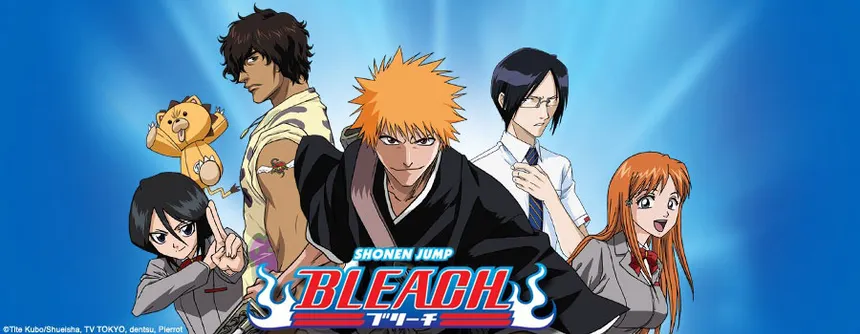

The Best Animaes according to Souvik
My Top 3 Animaes According to Me.
One Piece
It's about a boy who wants to be the King of The Pirate.
more info
watch link
Bleach
It shows between the living and nonliving people, theri society, demons etc.
more info
watch link

Naruto
It have very complex and interesting past and fights on their existance.
It shows between the living and nonliving people, theri society, demons etc.
more info
watch link